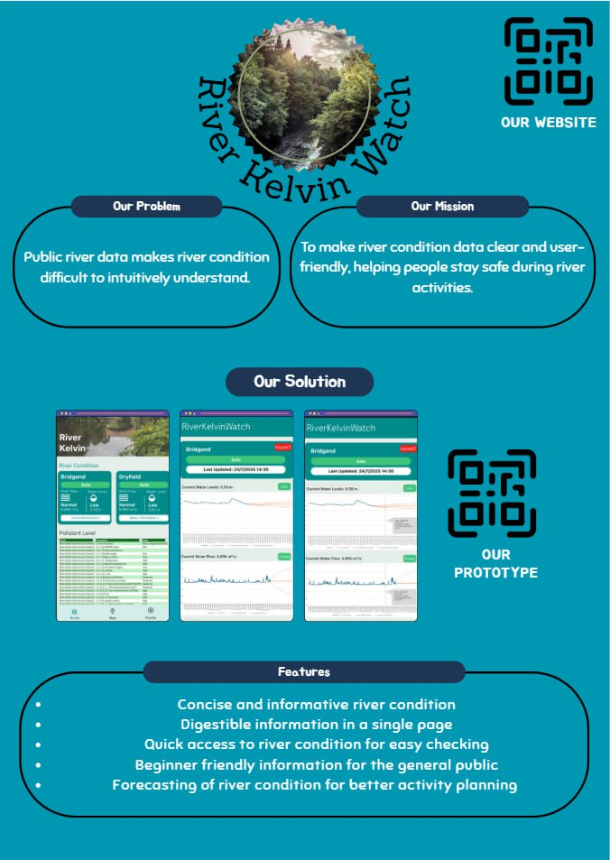
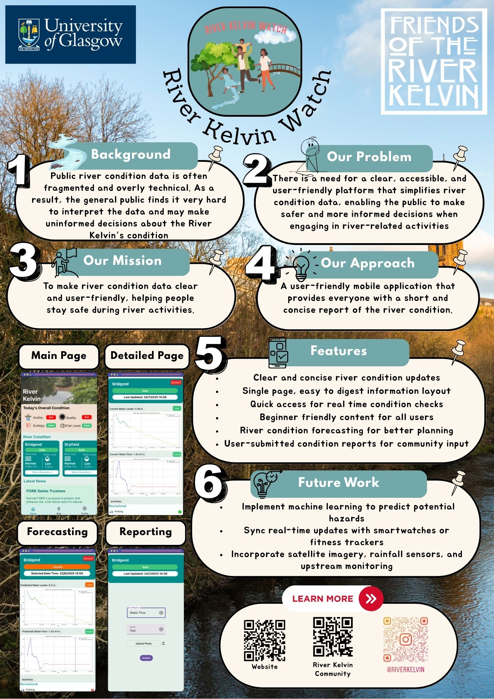

Daily Progress & Reflections
22/7/2025
In the morning, we attended a lecture on the importance of asking the right questions. From there our team decided to sit together and brainstorm some questions, mainly focusing on clarifying the questions that we had about the questions statement.
Some of the questions we had are:
- Who is the target audience, who is going to use
- What does river condition mean?
- Are there any other data sources that we can use, other than SEPA as it seems limited.
- What are the main concerns that we should be looking out for?
In the afternoon, we met our project partner, Sally from Friends of River Kelvin. The partner meeting have helped us in clarifying and understanding the whole project. Additionally, we got a chance to learn something new regarding the river through the discussion with Sally. We were quite glad that we were able to use what we learnt in class in action and was able to drill down the problem statement to better understand and fine-tune the requirements.
During the meeting, we also gave out suggestions of possible solutions, which was an easy-to-use mobile application. While the partner was receptive to this idea, she also suggested we look into Information Display Systems that are used on beaches to tell the public basic information.
After the meeting, we decided to first consolidate our findings from the meeting into a list in order to prevent any one person from being out of the loop and ended the day there.
23/7/2025
After lecture, we came together and list out all possible ideas during a group discussion where we came with:
- Mobile Application
- Information Display System
- QR Code + Website
The following are images of the brainstorming:


After the brainstorming, we decided to do some research on the different ideas that we had and drawing it out, we dicuss regarding the feasibility of each idea and also the cost of making the product.
Based on what we see, the idea that cost the most would be the Information Display System (need setup and constant power source), followed by Website (need hosting) and lastly the mobile app.
24/7/2025
We first created a storyboard to better understand how the app should work, using online resources we were able to create a general process flow to better understand and see how the product should work.

After that, we created a low fidelity prototype on figma to visualize the app's possible layout and functionality.
The features are:
- General Safety Information
- Current Water Level
- Charts that show both historical data and also prediction
- Current Water Flow
- Latest River Pollution Data
Even though we had created a low fidelity prototype, we knew that there was still a lot of work to be done before it could be considered a viable product, as such we spend the rest of the day refining the prototype, removing while also adding to hopefully meet the requirements set by the partner
We also conducted our first round of groundworking, where we visited the River Kelvin after school to learn more about the place


We also found out that there is a few warning poster that is already in place, but is often hidden and dirty, with some words fading.

We also found information board, such as a bird information and also notice board, but each of them seems unused and not updated often.

.jpg)

From the groundworking, we were able to see that there is a need for a better way to inform the public about the river condition, as the current information is not easily noticeable and also does not seem that updated.
25/7/2025
We had a lecture regarding prototyping this morning, as such we were able to use what we learn to finetune our low fidelity prototype. At first we focus on making the feature, but we now know that we should make a bad product, to understand the pain points better to better create a new prototype.
From here, we tested our prototypes within the group, knowing that the prototype is mainly for testing our ideas, we kept testing to find issues with our initial prototype.
We also created a list of issues that we found with the prototype, such as:
- Confusing charts
- Hard to navigate
- Difficulty in understanding the rationale behind one of the features (taking photo)
From here, we planned out on what can be used and what must be fixed in our high fidelity. However, what we focus more on about was the pitch video as it was due to this day.
Throughout the week, we had already created a powerpoint presentation and so while some of us were planning out the high fidelity prototype, others were working on the presentation and scripts.
Pitch Video
28/07/2025
We began the day by first confirming the features that we wanted to have in our product and then began the creation of our high fidelity prototype. We similar used figma to design and plan out the navigation of the app, through out the development, we faced some issues as we did not really understand how to use the more advanced features of figma. However, luckily the internet is there to help us and we were able to create a initial high fidelity prototype.
.jpg)
After the creation, we spotted some issue with the navigation and also how it should start up, from there we began further discussion to get everyone on the same page and also to vote on what should be done
We also found out that the pollution chart might be a little too confusing from people to understand, as such we began creating another home screen to try do an A/B testing
The current issue that we have now is that we need client feedback to better improve our prototypes.
29/07/2025
Today we received the feedback for our first pitch video, it was mostly positive, however the issue came with the understanding of the problem statement and also the project requirements, where we did not show enough regarding the forecasting and prediction of river kelvin. As such we decided to include them into our high fidelity prototype, making it more obvious for users to use and predict future conditions.
We also have started the initial draft of our poster, which is currently a work in progress, where we plan to focus more on selling the product than explaining what it does.
30/07/2025
We continue redesigning the app, mainly changing how the forecasting works. After doing some internal test run, we found out that the readability of the forecast was not that good, as such we tested different version and settle for one that just overrides the entire page to the forecast frame.
Our group have come to the understanding that no matter what there is still rooms for improvement and also that we should keep refining the prototype until it is more usable and when we are satisfied with it.
We were also able to create a second draft of the poster and also created a logo for our mobile application.
31/07/2025
Today, we conducted our second and possibly last partner meeting. The main focus for this meeting was to showcase our chosen high-fidelity prototype and gather final feedback from our partners.
We were given a few feedbacks on what we should look out for:
- We need to think about ways to reach out to people, ask why would they use this app?
- It would be nice if there are QR codes to link to both our Instagram and website.
- We should consider adding a news section to keep users updated.
We also discussed about the methods they uses for pollution checking and how it should be integrates with our app.

After the meeting, we asked some of our classmate to try testing the app to gather further feedback
- The label are confusing, there should be a way for us to know what each of them means
- Some of the charts were clipping through
- Talking about the community tabs, there should be a way to click into it as there is no way for them to scan the QR as it is a mobile app


01/08/2025
Today's is our submission day for the pitch video. Therefore, we spent the day finalizing the pitch video slides and recording the voiceover.
Pitch Video
Additionally, we modified the high-fidelity prototypes based on the feedback received from partners and classmates.
.png)
The main changes are:
- Added a help button to explain the chart
- Added a QR code to link to our Instagram and website
- Added a news section to keep users updated
- Add an alternative way to select the date and time for forecasting the river conditions
With extra time, we worked on improving the poster by adding a nice vector based background.
04/08/2025
Today, we were unable to meet in school as planned due to a weather alert, which led to the cancellation of on-campus activities. Despite this unexpected disruption, our group adapted by conducting the discussion virtually from our accommodation. We focused primarily on finalizing the poster design for the project.
Although we encountered some initial challenges in coordinating the discussion and sharing ideas effectively in a remote setting, we managed to overcome them by staying flexible and maintaining clear communication. Through collaboration and compromise, we successfully refined and completed the final version of our poster. This experience highlighted the importance of adaptability and teamwork, especially when working under unexpected limitations.
Shown below are the two new designs we've worked on. We all agrees that using the real River Kelvin image (instead of vector) looks nicer. The differences between the two is that the latter ones uses a tinted background. Our team will discuss in-depth tomorrow on which design is more appropriate for our target users.
05/08/2025
Today, we met up in school and conducted the final meeting and design discussion for the poster. It was agreed among the group that, the poster is not easy to follow for a person without context. Therefore, we added numbering to the poster to help guide the user through the poster.
We then proceed with the voting phase which resulted in the first poster being voted majoritively. However, we did not just select the first poster. Learning from the Mental Model lecture, we asked the minority group on why they prefer the second poster. After much discussion, our group made some changes that integrates elements from the second posters, and use it as our final design.
06/08/2025
For the next few days, we discussed and decided to focus on our website, where we focus mainly on the content and also the design of the website. We mainly focus on trying to match the color scheme of the website to match that of Friends of River Kelvin and also river in general.
We made the website using:
- HTML
- CSS
- Bootstrap
As for the content, we used previous student's website as template and design it with the goal of recording our design process and project roadmap.
07/08/2025
Today we focused mainly on the content of the website, making sure what we added correctly reflected on what we did for that day and also uploading images to support what we did.
We also made sure to add the pitch video and also the poster to the website, so that it can be easily accessible.
Currently, the issues we faced is just the interactivity of the site, as we are only allowed static website and our group wanted to keep the design and website coding as minimal as possible.
Group Reflection
Stakeholder Reflections
1st Partner Meeting
The first stakeholder meeting was a turning point in shaping our project. Using questioning techniques from our lectures, we were able to ask targeted questions that clarified both the problem statement and the requirements. This gave us a deeper understanding of the user’s needs and helped us start shaping a product that could truly meet them.
Brainstorming on the spot showed us how valuable it is to share ideas early, even if they’re rough, we found that one suggestion often sparked others. Learning about the river’s current condition also made the project feel more meaningful, as we could now see the real-world impact our work might have.
2nd Partner Meeting
By the second meeting, we felt more confident presenting our high-fidelity prototype. The feedback we received wasn’t just about fixing issues, it was also a lot of suggestions of features that we did not know that we needed at first. By talking to the partner, it helped us really understand the main purpose of the project, which is to communicate to the public about what is going on with River Kelvin
Overall, these meetings taught me that effective communication and active listening are just as important as technical skills. In future projects, I’ll apply this approach early to ensure our solutions align closely with stakeholder needs.
Product Reflection
We began by brainstorming and sketching ideas on paper. Although simple, this made it easier to discuss and refine concepts before committing to a detailed design. We decided on a mobile application to provide real-time information about the River Kelvin, with additional features like historical data, forecasts, and safety information.
Lo-Fi Prototype
Creating the low-fidelity prototype in Figma allowed us to focus on structure and usability without worrying about visuals. Because it was low commitment, we could test, receive feedback, and discard ideas without hesitation. Internal testing quickly revealed confusing charts and navigation issues, which we were able to address before investing more time.
Hi-Fi Prototype
Building the high-fidelity prototype brought the design closer to reality, but also introduced challenges. A disagreement about the login system initially split the team, but instead of voting, we used integrative thinking to find a compromise, which was that we only require logins only for sensitive features. This experience taught me that conflict, if approached constructively, can lead to better solutions.
Usability testing with classmates and our partner exposed issues we hadn’t noticed, such as unclear labels and poor navigation flow. Addressing these not only improved the product but also reinforced the importance of testing with real users. Documenting all feedback and changes ensured a smoother handover to the development phase, something we are sure that we will make standard practice in future projects.
Overall
This project was a great learning experience for our team. We faced challenges in understanding the problem statement and requirements, but through brainstorming and discussions, we were able to clarify our goals. The iterative process of prototyping helped us refine our ideas and create a more user-friendly product.
Overall, we are proud of the final product and the skills we developed throughout this project. We learned the importance of gathering feedback from both partners and peers to improve our design. Most importantly, we were able to apply the concepts and skills we learned throughout the OIP into real-life projects.
We are dismayed that we were not able to produce a working mobile application in this three weeks time frame. However, we are confident that the design and features we developed will be valuable for future iterations of the project. We hope that our work will contribute to improving river safety and awareness not just for River Kelvin, but the entire community.
Finally, we would like to thank our project partner, Friends of River Kelvin, for their support and guidance throughout this project. Their insights and feedback were invaluable in shaping our design and ensuring that we met the needs of the community.
Read more on our individual reflections:
Lee Wei Kwan Bernard
Working in on this project was a great learning experience for me. While I have done projects that involve real life clients and solving real life problems (PSD/TP), this project was different as it involved external partner that is not from Singapore. This made me realize the importance of understanding the local context and how it can affect the design and development of a product.
Initially, I thought we would be developing a working prototype, but as we progressed, I realized that the focus of this module was more on the design and planning aspects. This shift in focus allowed me to understand the importance of user-centered design and how to create a product that meets the needs of the users. For example, the 1st lecture conducted taught me how to effectively craft good questions. Therefore, during the first meeting with our project partner, I was able to ask the right questions to clarify the problem statement and requirements. This helped my team to better understand the needs of the users and create a more user-friendly product.
Additionally, the iterative process of prototyping helped us refine our ideas and create a more user-friendly product. We learned the importance of gathering feedback from both partners and peers to improve our design. For example, during the usability testing, we were able to identify issues with the navigation and readability of the charts. This feedback allowed us to make necessary changes to improve the user experience.
What I'm proud of
- Kickstarted a project with real life impact
- Being able to undertake a project with external partners from Glasgow
- Worked on a large scale project with a team of 6
What I'm NOT proud of
- Did not produce a working prototype
- Did not do well for the first pitch video
Loh Qingkai Benjamin
As a Year 2 Computing Science student, I’ve worked on several projects, but this one stood out—similar to a previous module, PSD, where we had to interact with a customer. It made me think more deeply about real user needs. Even though it was just a frontend design, we had to consider how people interact with river safety data in a clear and accessible way.
Working with my teammates was smooth. We split the work based on our strengths and continuously refined our ideas together. The pitch videos gave me a chance to reflect on what I learned in class and to showcase our progress in a short 5-minute format especially when it came to communicating our design clearly. By the second video, we improved a lot. Thanks to the feedback from our marker, we presented our ideas more confidently and clearly.
Creating the poster helped bring everything together visually and allowed us to reflect on the full design journey. This project reminded me that even simple interfaces can make a real difference when built with purpose and with the user in mind.
What I'm proud of
- Worked well together as a team
- Able to use what we learn in class and apply to this project
- Completing this project well and on time
What I'm NOT proud of
- Didn't have the chance to create a working prototype
- Due to clarity issues we did not do well for the first pitch video
Throughout these 3 weeks of lessons and project work, I gained more knowledge and experience working with both the partner and my teammates. I applied what was taught in class by the professors to our project and gained new perspectives through the collaboration with the partner.
Tan Jia Jun Bryan
This project was an interesting experience. Although not the first time we (the year 2 CS students) were exposed to an external party during our curriculum (some if not most of us would have already had this experience from the 'Team Project' module), being exposed to an external party in an unfamiliar environment was a novel experience.
I personally faced various challenges along the way such a lack of familiarity with the local (Glasgow/UK) context, the time constraints of the project, needing time to settle into a different environment, falling sick .etc and through it all I am glad to have come out more enriched. In the highly globalized world of today, experiences like these will be sure to come in handy - especially in a metropolitan environment like the one back in Singapore.
What I'm proud of
- Successfully completing the project with my teammates
- Being able to learn about Glasgow city and its nature
- Being exposed to different ideas about a process-oriented project execution
What I'm NOT proud of
- We could have looked to improve on the aesthetics of the application, poster and website given more time
- Not being able to anticipate certain issues (prototype use-flow, API usage, feasibility .etc)
- Needing an unexpectedly longer time to acclimatize to a different environment
While there are various aspects we could look to improve on, I am glad that we were able to come together as a group and give it our all to successfully complete the assignments. Working with my group mates, the faculty at UofG and our project partner was a pleasure and I would like to expressed my heartfelt thanks to everyone involved.
Kek Zhi Wei
While this is not the first project that we did, that involves real life clients and solving real life problems/project (PSD/TP). Even so, it was a good learning experience as this was a completely different setting as compared to Singapore. Initially, it was difficult to adjust throughout the OIP as it was completely different as to how teaching was back in Singapore.
Regardless, I had a enjoyable time working with my teammates and completing this project. I learnt the importance's of effective communication and collaboration. Even though most of us have mostly the same idea, each of us have different ways of designing and also how to implement, this shows how each of us had different mental model of the same idea. Through communications and collaboration, we were able to iron out each of our mental model and into a shared mental model, getting everyone on the same page.
What I'm proud of
- Design a user-friendly interface for the application
- Design a somewhat easy to use forecasting feature
- Able to possibly implement user requirements from the partner meeting
What I'm NOT proud of
- Not able to fully expand on the map features in the high-fidelity prototype
- The initial thinking process of the forecasting feature was so difficult for people to use
- Unable to test out the data retrieval in an actual use case to see feasibility of the concepts
Overall, this product was good learning experience for me as I get to learn new stuff and implement it to my work. As for the product, I believe given more time and resources, we would be able to iron out most of the issues and also implement more stuff that we further enchance user experience.
Koh Wei Jie Justin
Summary Prototyping and wireframing were really fun for me. Next time I want to get involved earlier in coding.
Leong Jing Feng
Working on this project is very exciting for me as it is my first time working at a different location and on a venue that is not related to Singapore. This project helps to bring out my creative side as I have to think outside of the box for a solution that is related to a venue I am not familiar with.
The chemistry between me and my team was not new as we worked on a previous module as a whole group before as well. Therefore, picking up from where we left off was easy. As mentioned, the problem regarding the River Kelvin was new to us. We, as a group, went down to explore the place so that we could learn more about the River Kelvin and think of more feasible solutions.
The entire process from brainstorming to creating a prototype was completely new to me as it involves a stakeholder. This experience cannot be recreated just by sitting on our campus back in Singapore. Therefore, I really appreciate the entire process of this project. Communicating with the stakeholder has been a pleasant experience as she was very helpful and informative about the River Kelvin.
Ultimately, this project allows me to understand more about problem-solving. It taught me that solving a problem does not just include creating a problem statement and solving it. I should actively include the involved parties to make sure that the solution is actually what they want.
I am glad and appreciate this opportunity to work with my group and our stakeholder Sally on this River Kelvin project and hope that our prototype can help more people prepare their trip to have some fun at the river and help Sally grow the River Kelvin Community.
What I'm proud of
- How the app was able to convert in-depth information into digestible bites
- The app can help encourage more people to visit River Kelvin for family and friend activities
What I'm NOT proud of
- Unable to create a cupboard prototype for the stakeholder to try
- Not enough time for us to create a functioning app for the community to try out